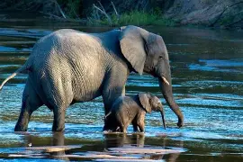
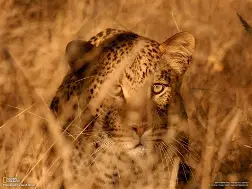
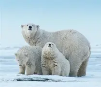
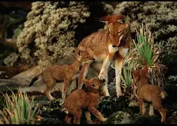

🐆 My Videos 🐆
👑 This a Fantasy themed song I created! I know this has nothing to do with animals (except for the unicorn and dragon that are mentioned) but I adore daydreaming about fantasy worlds. I hope you like the song and the music video! 🦌
Song: Raise a Cup to Rowan 🏰
🦒 My Pictures 🦒
These are photos of some of the animal species threatened by extinction.
 |
 |
 |
 |